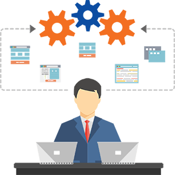
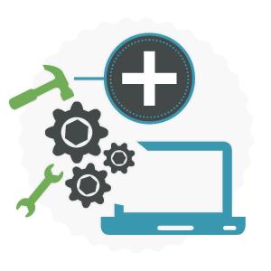

Product Engineering Services
Global software market is often marked by shifting dynamics, with consistently increasing cost pressures, need for innovation to create space in the opportunity arcades, as well as meeting the requirements to stay ahead in competition becomes imperative. At NSquare we understand these challenges; we help overcome most of these hurdles through outsourced product development. This is a proven method to drive businesses and a viable option to gain competitive advantage. Our expertise and delivery model ensures smooth execution, maximum visibility and sound ROI for product companies. NSquare has a proven track record of serving software vendors for their software development needs. We provide an end to end software development, maintenance and re-engineering services. An adaptive SDLC and Development Methodologies based project execution for fail-safe software development, along with high Visibility, Risk mitigation and immaculate Project Management. Best in practice development methodologies like Agile, SCRUM for planning, management and execution, ensuring maximum control, efficiency and delivery.
At NSquare, software development is an inherent combination of not only execution but it involves and is driven by conviction for accomplishing client’s over all experience. It is our primary objective to incubate, recommend and provide additional value to our clients. Our technology skills, development methodology and passion towards every client is a definite success quotient for the projects that we work on. We have evolved from traditional software development towards newer software development trends. We consider value-add as a very significant ingredient for every requirement, and hence our team acts as an extension to client’s team, sharing the equal zeal towards attainment of additional value along with a successful execution.
NSquare expertise’s throughout different phases of product life cycle. This means NSquare is capable of taking up projects
from any of the below stages:
- Requirement Analysis
- Ideation and Conceptualization
- Architecture, R&D, and Prototyping
- Design and Development
- Testing and Assurance
- Training and Product Support
- Maintenance
Planning and Requirement Analysis:
This phase helps in acquiring inputs from the client. Based on the requirement a project approach and plan is made, along with feasibility study in the economical, operational, and technical areas.
Defining Requirements:
This phase involves defining and documenting the product requirements. This is achieved through capturing software requirement specifications which consists of all the product requirements to be designed and developed during the project life cycle.
Designing and Product Architecture:
Software Requirement Specification is a reference for architecting based on the requirements. The relevant stake holder review this based on risk assessment, product robustness, design modularity, budget and timelines. A design approach clearly defines all the architectural modules of the product along with its communication and data flow representation with the external and third party modules (if any).
Product Development:
Actual execution wherein the development starts in an organized manner.
- Well-structured programs
- Systematic phasing increasing the quality and productivity
- The Agile methodology decreases the effect of change in requirements
Testing:
This is part of all the stages though SDLC. However this stage refers to the testing only stage of the product where products defects are reported, tracked, fixed and retested, until the product reaches the quality standards.
Changes, upgrades to software or adaptation of newer technologies and platforms. We definitely know that every aspect of business goes through consistent changes and businesses need to be adaptive to stay along with the market as well as latest technologies. Understandably, there comes a great deal of challenges for managing technology to keep up with the pace. We have relevant approaches and expertise to solve these maintenance needs. Be it petty fixes or bigger upgrades along with defect repairs. We have robust and proven processes to assess and execute well planned methods to resolve these problems. The knowledge transition helps our team get the client system in our nerve, subsequently allowing us to plan, analyze, estimate impact factors along with transition phases.
Types
- Offshore and onsite maintenance
- Bug fixing and troubleshooting
- Bug tracking and reporting
- Fine tuning the product functionality
- Research, design, updating and implementation of new features
Requisites
- The performance of the software must be maintained (perfective maintenance)
- The errors in specifications, design, and implementation must be corrected
- The final product must also evolve to existence (evolution maintenance)
Every product goes through its life-cycle. These products or systems definitely call for relevant modification, upgrades or re-engineering in due course. Be it migration or moving these systems to new platforms or technology, these needs are inevitable, especially in the technologically vibrant markets that we are in. Alterations, modifications or adherence to newer compliance create problems/hurdles for regular business operations, and at the same time lot many things need to run parallel. NSquare has the answer for smooth functioning, while adapting to the changes. This is where our software re-engineering capabilities come into play. Our methodologies include data migration, technology migration system and forward engineering. Ensuring maximized cushioning to fallouts or re-engineering impacts.
Types
- Re-architecting
- Migration to new software delivery model (such as Software as Service (SaaS), Platform as Service (Paas),
and Delivery over cloud) - Technology and user interface upgrade
- Data Migration
- Application re-engineering
- Application integration
- Re-documentation
- Platform transitions
Requisites
- Mode of operation
- Business goals for future
- Advantages from process